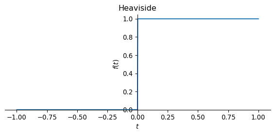
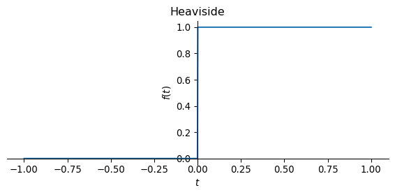
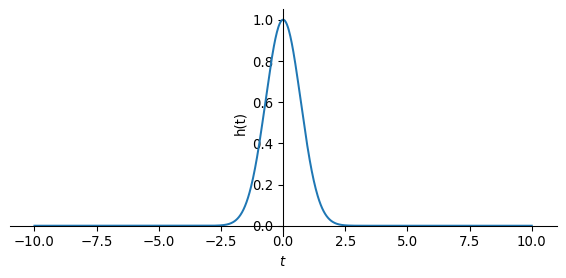

Show the code
from sympy import symbols, diff, Heaviside, DiracDelta, integrate, plot, exp
t = symbols('t', real=True)
plot(Heaviside(t), (t, -1, 1), size=(6,3), title='Heaviside')
So far, we have investigated fields as a function of location and frequency. This is adequate as long as we consider time-harmonic dipole excitation with a time dependency of the dipole moment of \(e^{i\omega t}\), i.e.
\[ \mathbf m(\mathbf r, \omega) = \mathbf m(\mathbf r) e^{i\omega t}. \]
The relationships immediately become different if we allow abrupt changes in the dipole moment instead, e.g.,
\[ \mathbf m(\mathbf r, t) = \mathbf m(\mathbf r) \delta(t) \] or \[ \mathbf m(\mathbf r, t) = \mathbf m(\mathbf r) u(t). \]
\(u(t)\) is the Heaviside step function \[ \begin{equation} u(t) = \begin{cases} 0 & t < 0 \\ 1 & t > 0. \end{cases} \end{equation} \]
The following figures show the Heaviside function \(u(t)\) and the result of the time integration of the Dirac delta function \(\delta(t)\).
We use the symbolic expressions t for the time as well as Heaviside and DiracDelta for step function and Dirac’s delta function respectively. Furthermore, we use the function integrate for symbolic integration.
from sympy import symbols, diff, Heaviside, DiracDelta, integrate, plot, exp
t = symbols('t', real=True)
plot(Heaviside(t), (t, -1, 1), size=(6,3), title='Heaviside')
The following figure shows the result of the time integration of the Dirac delta function, where the integral over \(\delta(t)\) from \(-\infty\) to \(t\) is assigned to the value of a function at time \(t\).
plot(integrate(DiracDelta(t), t), (t, -1, 1), size=(6,3), title=r'$\int_{-\infty}^t\delta(\tau) d\tau$')
Both figures obviously show the same result. So the following applies \[ u(t) = \int\limits_{-\infty}^t \delta(\tau) \, \mathrm d \tau. \]
We can reproduce the result using symbolic mathematics.
(In sympy the Heaviside function has the symbol \(\theta\)).
integrate(DiracDelta(t), t)\(\displaystyle \theta\left(t\right)\)
Conversely, the following applies to the time derivative of the Heaviside function \[ \frac{\mathrm d}{\mathrm dt} u(t) = \delta(t), \] of which we can convince ourselves by symbolic differentiation:
diff(Heaviside(t), t)\(\displaystyle \delta\left(t\right)\)
We will use two important terms in the time domain, namely * step function response * impulse response.
These terms are related to the time dependence of the current function of the dipole moment.
In general, the dipole moment is a function of location and time, i.e., \(\mathbf m(\mathbf r, t) = \mathbf q(\mathbf r) I(t)\). Here, \(\mathbf q(\mathbf r)\) describes the exact position of the current-carrying cable (e.g., a large horizontal coil on the Earth’s surface) and \(I(t)\) the time dependence of the current in this coil.
In the following, we only consider the time dependence of the dipole moment, i.e., \(I(t)\).
The fields that we can measure anywhere in the full space as a direct result of switching the source current on or off are called the step function response of the electrically conductive full space
A current function of the form
\[ I(t) = I_0 u(t) \]
describes the switching on of a current in the source at the time \(t=0\) in the form of a step function. The fields \(\mathbf e(t)\) and \(\mathbf b(t)\) observed for \(t > 0\) are called step function response. These fields are measured with electrodes or magnetometers.
The current function
\[ I(t) = I_0 \delta(t) \]
describes an impulse-like source current (“lightning”), which, however, cannot be realized in an instrument and is difficult to measure.
How can we measure the impulse response?
The following idea is interesting: If you measure magnetic fields with induction coils, the physical measured variable is the electrical voltage induced in the measuring coil, which is proportional to the change in the magnetic field over time.
Induction coils measure \(\partial_t b(t)\), i.e. the time derivative of the step function response \(b(t)\)!
How can this relationship be described?
We have already seen above that the integration of the Dirac delta function with respect to time yields the Heaviside jump function. Conversely, the time derivative of the step function yields the delta function, i.e. a Dirac impulse.
We transfer this concept to the fields:
| field size | time dependence of the source | term |
|---|---|---|
| \(\mathbf e(t),\mathbf b(t)\) | \(u(t)\) | Step function response |
| \(\frac{d}{dt} \mathbf b(t)\) | \(\frac{d}{dt} u(t)\) | impulse response |
| \(\frac{d}{dt} \mathbf b(t)\) | \(\delta(t)\) | impulse response |
We now derive an important relationship between the impulse response and the step function response.
Let \(h(t)\) be the impulse response.
The impulse response \(h(t)\) used here a physically unspecified function of time, not the magnetic field!
We then obtain the step function response \(f(t)\) from the convolution of the impulse response \(h(t)\) with the Heaviside function \(u(t)\):
\[ f(t)=h * u(t)=u * h(t)=\int_{-\infty}^{\infty} h(t') u(t-t') d t' =\int_{-\infty}^{t} h(t') d t' \]
The step function response at time \(t\) is therefore the result of the time integration over the impulse response from \(-\infty\) to \(t\).
In the following example, we assume that the impulse response is \(h(t) = e^{-t^2}\).
def h(t):
return exp(-t**2)
plot(h(t), (t, -10, 10), size=(6,3), ylabel='h(t)')